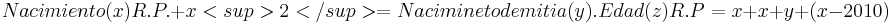

De: La Frikipedia, la enciclopedia extremadamente seria.
De: La Frikipedia, la enciclopedia extremadamente seria. De: La Frikipedia, la enciclopedia extremadamente seria.

|
FRIKIPEDIA QUIERE QUE ESTA DEFINICIÓN
PASE A SER UN ARTÍCULO FRIKIPÉDICO La información contenida en este artículo es una mínima parte de su jugo total, así que ponte los guantes, saca el tupperwere y empieza a exprimir el tema. Si lo haces serás recompensado con una galleta en almíbar y algo más. |
Robert Parkinson Pattinson (más bien conocido como el hijo del creador del patín) es el protagonista de la más que traumatizante engatusadora pelicula Crepsculo Crepúsculo, nombrada después de que Stephenie Meyer le tirase un plato de creps al director Chris Weitz (el director), acertandole en el pompis y produciondole un "Púrpura anafilacoídea" (o para aquella gente que no consiguiese aprobar Biologia en 2ndo de la ESO, un moratón). Se dice que nació el 13 de Mayo de 1986 en Londres, pero eso es imposible porque mi tia nacio el 13 de Mayo de 1986 en Londres, concluyendo de esta forma que fue un error de sus familiares y medicos al determinar la hora del nacimineto, y de esta forma deduciendo que nació el 13 de Mayo de 1986 pero antes de Cristo (lo cuál tiene sentido ya que es un vampiro y los vampiros nunca mueren, verdad?)Esto se simplifica con la siguiente ecuación.

Su aportación e involucración en la película fue de lo más casual, ya que en medio del rodaje de Harry Potter y el caliz de fuego se salió del plató y acabó rodando por las escaleras, consiguiedo y, sintiendose inspirado por la película de Drácula 2000 (la cual se grababa en ese momento muy cercana a la de Harry Potter) Decidió hacerse pasar por un vampiro pero de esos que no chupan sangre porque en realidad no son vampiros y no se alimentan con sangre de otras personas pero es que sospecho que se alimenta de amor porque claramente son vampiros...
Resulta ser que Robert es, tras largos estudios científicos y jurídicos con el motivo de encontrar una explicación a tan asombrosa actuación en la película, pariente lejano lejano , de Vlad III, un pobre señor que tuvo que soportar los discos de Enrique Iglesias y Rosario, propiedad del hombre que se "hacía cargo de velar por su seguridad" Bram Stoker, consiguiendo así que le atacase con la mandíbula postiza, aferrándose a su cuello, ignorando sus mutilados brazos y piernas(no tenía), a lo que Bram se vengó escribiendo un libro llamado "Drácula" que sorprendente y casualmente se estaba adaptando por doblemil (x2(1000))vez en película en el momento en que se estrelló contra la esquina del hangar donde rodaban la película (todo lleva siendo un archivo alto secreto de los Estados Unidos durante años , pero usando un programa de software avanzado llamado Lógica, he podido finalmente desenredar cuan auriculares este misterio difícilmente resuelto por el mismisimo Sherlock Holmes.
Autor(es):